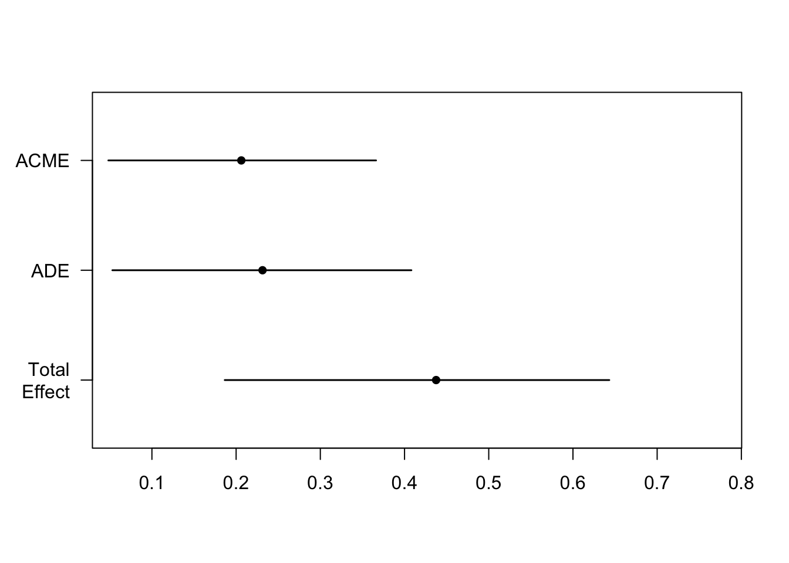

What Statistical Analysis Methods Do We Know So Far?
A t test tests for significant difference between two - and only two - mean values. ANOVA extends the t test functionality by exploring differences between several means either within one factor that has two or more levels or across multiple factors that can have more than two levels. ANOVA’s (and the regression method’s) ability to manage more than two variables within an analysis, give us the capacity to explore whether predictor variables effect each other and the outcome variable at the same time: we can test for interactions.
Measures of association follow a similar pattern: Correlation in its simplest form measures the direction and a degree of strength in a relationship between two variables.
Path Diagram for a Simple, Bivariate Correlation
Simple regression nominates one of those two variables as a predictor of the other. Indeed, if you use standardised values for predictor and outcome variables, the simple regression will return the Pearson’s r correlation coefficient as the simple regression coefficient estimate.
Path Diagram for a Simple Regression Model
Multiple regression methods extend the correlation test functionality to many more predictor variables, each with the capcacity for multiple levels within a predictor.
Path Diagram for a Mutliple Regression Model (add more X for extended models)
Multiple Variables = Multiple Potential Models
Once we have multiple variables, we can take stock of the relationships not just between X and Y but also between the predictor variables. In week 13, we explored interactions in the context of effects on Y for a value for one predictor variable changing as the levels of a second predictor variable changed - an interaction. As the levels of one predictor changes, it moderates the effect of another predictor on Y.
Predictor variable relationships are not always those of interactions / moderations, however. There are other types of relationships that occur between predictor variables. The focus of this week’s lecture is that of the mediated relationship.
Mediation: A Causal Model
Mediation helps answer the question: how does a predictor variable effect an outcome variable, in the presence of a mediating variable? Look at the path diagram below.
Path Diagram for a Mediation Model
There are still two predictors of Y, denoted by the two arrow heads that point to Y. If this were an interaction effect relationship then M would have an arrow connecting onto the line between X and Y. Instead, for a mediated relationship, the line between X and Y is both direct from X to Y on the bottom part of the diagram, but also goes through the predictor M, on the top of the diagram. One expression of X’s relationship with Y is direct, unmediated. An alternative expression of X’s relationship with Y is indirect, is mediated, by the predictor variable M. Some of X’s influence of effect passes through or is accounted for by M.
Parts of the Mediation Model
A mediation model is defined by four paths. These paths are labelled on the connecting arrows of the diagram, the lie between the variables in the rectangular boxes.
Path c: The path of total effect - perhaps you will recognise that this pathway is the arrow between what is otherwise a simple regression model diagram (see above and directly below).
The Path of Total Effect in a Mediation Model
Path c': (read Path c-Prime) The path of direct effect
Path a: The path of X predicting M
Path b: The path of M predicting Y
Together, path a and b are referred to as the path of indirect effect. See the diagram below.
The Paths of Direct and Indirect Effects in a Mediation Model
Pause for a moment and look at the mediated model path diagram above. If we start at X and trace along to Y, then the single-arrow line denotes a simple regression model. Go back to X and now trace the single arrow line to M. This also denotes a simple regression model. Now start at M and follow the single-arrow line to Y. We have yet another diagram for a simple regression model.
However, X predicts both M and Y in the model below, so if we want to be sure that we are isolating M’s effect on Y, we have to partial out X’s influence on Y at the same time. We do this by putting X as a predictor of Y in the same time and in the same model for when we use M as a predictor of Y. Hence, the single-arrow line from M to Y, is a multiple regression because we have two predictors - our primary predictor of M and (in the context of this model) our secondary predictor of X, whose effect on Y we are seeking to control.
Now think about this:
To find the effect for the indirect paths a and b, we multiply them together. If we then add them to the effect of the direct path, c', then we should have the same magnitude or value of the effect as that of the total effect path, c.
There are many types of mediation models. Here we will concentrate on only two: fully or partially mediated models.
When all of the effect passes through the indirect path, or through the mediating variable M, then we say we have Full Mediation. We can recognise this because the direct path, or c' is reduced to such a small value that it is no longer significantly different from zero, i.e. the regression coefficient in the multiple regression model of Y = M + X is non-significant
\[
Full\ Mediation: ab + (c' = 0) = c
\]
A Full Mediation Model
When some of the effect passes through the indirect path, or through the mediating variable M, and a significant amount still passes through the direct path, then we say we have Partial Mediation.
\[
Partial\ Mediation = (ab > 0) + (c' > 0) = c
\]
A Partial Mediation Model
Additional Assumptions to the Linear Model Assumptions
All of the usual assumptions for linear regression models apply to mediation models - because they are, after all only a series of regression models. However, we are beginning to claim a causal relationship and so there are some extra considerations. As an explanatory process, X can be said to be ‘causally’ related to Y when: + X is associated with Y + X precedes changes in Y + No other unmeasured variables are related to X and also affect Y
There are also some conditions that are specific for claiming an effect is a mediated relationship:
Necessary Conditions for a Mediation Model
X need not be a significant predictor of Y
M must not be a primary predictor variable for Y
M must not be any of the study conditions
M must be singificantly predicted by X
M must reduce or eradicate the impact of X on Y
Further Desirable Properties for a Mediation Model
X should / could precede M in time
M should significantly predict Y but Y could also significantly predict M
M and Y could be correlated if they are both causally related to X.
Swapping the order of variables can check this
High power
Study design can help this: from weakest to strongest for assumptions
Cross-sectional design (v. popular in student projects – beware…)
Panel designs that allow for staggered measurement in waves
Experimental designs with random assignment and manipulated variables
Bootstrap method offers strongest solution here. See the demonstration video here
While this is known as a four step approach, it involves making three regression models:
Step 1: Model 1 = path of total effect; a simple regression model involving predictor X and outcome Y
Step 2: Model 2 = path of indirect effect a; a simple regression model involving predictor X and outcome M
Step 3 & 4: Model 3 = path of indirect effect a and direct effect c'; a multiple regression model involving predictor X and M on outcome Y
Here are the steps are linear regression equations:
Step 1: Model 1
\[
Total\ effect: = Y = b_0 + b_1 * X + e
\]
Step 2: Model 2
\[
indirect\ effect\ a = M = b_0 + b_1 * X + e
\]
Step 3: Model 3
\[
indirect\ effect\ b = Y = b_0 + b_1 * X + b_2 * M + e
\]
Step 4: Within Model 3
This occurs within model 3. For this step, look at the regression coefficient for the X predictor. This is the direct effect coefficient, or the coefficient for c' (c-prime):
If the X coefficient in the third model is significant, and M is significant, then you have a partial mediation effect;
If the X coefficient in the third model is non-significant, and M is significant, then you have a full mediation effect
Mediation Analysis Method Using R: Bootstrap Test (Preacher & Hayes, 2004, 2008)
Due to concerns for low power in mediation analysis methods, the dynamic duo above constructed a bootstrapped method to harness the power of machine learning and automate a resampling technique, just so we could have greater confidence in our results. The mediation package (Tingley et al., 2013) has prepared the process for R users. In order to use the automated process, the researcher has to write the three models as above and then write a further line of code, telling the bootstrapping algorithm what models to use. The only process that is new in this method is the line of code for the bootstrapping part. The three models are simple and multiple regression models.
If at this point, you have not watched the week 14 lecture demonstration video, please watch it now here.
Reporting Results for a Mediation Analysis Model
Read this carefully because it sounds repetitive and as if I may have made an error, but it is the correct method:
First, as with all results, report the method that you used and your predictors, outcome variables and any transformations that you made to inform your modelling process.
Then, report the indirect effect with its confidence intervals. This is generally the effect that has the most power. Then report the direct effect with its confidence intervals. At this point you may want to claim either a full or partially mediated effect, however be careful. In a context of low statistical power, Type II errors can occur for the direct path coefficient. Finally report the total effect coefficient with its confidence intervals and discuss how the additional assumptions of mediation analysis are met.
Interpreting Results for a Mediation Analysis Model
As with all results, interpretation is largely driven by theory. A partial mediation may be illuminating an otherwise concealed relationship and so inform some theory development. The size of an indirect effect may indicate the strenght of a mediating relationship which could prompt more attention and greater dedication of research resource in future studies. It is your job as the researcher to make these statements, in the context of both theory and prior research.
Demonstration
The following is the script from the lecture video
Mediation analysis
In this demonstration, we will model a mediation analysis.
Is the quality of Supervision related to Dissertation Performance? What, if any, mediating effect may the self-esteem of a student have on this relationship?
We are going to test for the mediator variable of self esteem.
First, if you haven’t already, download the data file from here and upload to the R server. You may need to change the upload codes below to suit your directory structure.
Early in the construction of the script, I noticed that there were different levels of missingness across the models - this means that coefficients are estimated on different datasets, so we are introducing a potential source of systematic error if we do not correct for this.
Checking for missingness:
summary(d_full)
supervision self_esteem dissertation_performance
Min. :1.667 Min. :1.571 Min. :1.000
1st Qu.:3.333 1st Qu.:3.286 1st Qu.:2.380
Median :4.000 Median :3.857 Median :3.037
Mean :3.786 Mean :3.864 Mean :3.028
3rd Qu.:4.333 3rd Qu.:4.500 3rd Qu.:3.593
Max. :5.000 Max. :5.714 Max. :5.815
NA's :2 NA's :3
For the purposes of this analysis, I will remove the observations (rows) with NA values. This is not the best way of working with missingness, but for the purposes of the demonstration it is ok.
d <-na.omit(d_full) # 4 observations removedsummary(d) # no NA values listed
supervision self_esteem dissertation_performance
Min. :1.667 Min. :1.571 Min. :1.000
1st Qu.:3.333 1st Qu.:3.286 1st Qu.:2.370
Median :4.000 Median :3.857 Median :3.074
Mean :3.791 Mean :3.853 Mean :3.030
3rd Qu.:4.333 3rd Qu.:4.429 3rd Qu.:3.593
Max. :5.000 Max. :5.714 Max. :5.815
I am going to copy and rename the variables to save on typing. You don’t have to do this of course, and it may help you if you don’t.
X = supervision Y = dissertation_performance M = self_esteem
d <- d %>%mutate(X = supervision,Y = dissertation_performance,M = self_esteem)
The Four Step Approach of Baron & Kenny (1986)
Four steps but three independent linear regression models (as listed above):
Simple regression for the effect of X on Y (total effect = pathway c)
Simple regression for the effect of X on M (indirect effect pathway a)
Multiple regression with Y as the outcome variable and
the effect of M (indirect effect pathway b)
while controlling for X (for direct effect estimation = pathway c')
Pay Attention
When running your models, you need to assign them to objects in the environment to then be able to use them in a call to the mediation package when you run your bootstrapping process. Take note of how I call my models below to help you do this.
Step 1: Test the c pathway of the total effect
\[
Y = b_0 + b_1 * X + e
\]
via a simple regression model:
(fit_total <-summary(lm(Y ~ X, d)))
Call:
lm(formula = Y ~ X, data = d)
Residuals:
Min 1Q Median 3Q Max
-1.83011 -0.56623 -0.04308 0.51478 2.25553
Coefficients:
Estimate Std. Error t value Pr(>|t|)
(Intercept) 1.3718 0.4679 2.931 0.004470 **
X 0.4375 0.1209 3.620 0.000532 ***
---
Signif. codes: 0 '***' 0.001 '**' 0.01 '*' 0.05 '.' 0.1 ' ' 1
Residual standard error: 0.8361 on 75 degrees of freedom
Multiple R-squared: 0.1488, Adjusted R-squared: 0.1374
F-statistic: 13.11 on 1 and 75 DF, p-value: 0.0005321
The total effect of our predictor on our outcome is significant. In other words, supervision on dissertation performance is significant (p < .001). A change in one unit of supervision is associated with an increase in dissertation performance of 0.44.
Check the assumptions at this point.
There is an effect that can be tested for mediation.
Step 2: Test the a pathway of the indirect effect
\[
M = b_0 + b_1 * X + e
\]
a second simple regression model, using X as a predictor but this time, M (self esteem here) is our outcome variable:
(fit_indirecta <-summary(lm(M ~ X, d)))
Call:
lm(formula = M ~ X, data = d)
Residuals:
Min 1Q Median 3Q Max
-2.34553 -0.48838 0.02337 0.61288 1.49353
Coefficients:
Estimate Std. Error t value Pr(>|t|)
(Intercept) 2.7018 0.4406 6.132 3.74e-08 ***
X 0.3038 0.1138 2.670 0.0093 **
---
Signif. codes: 0 '***' 0.001 '**' 0.01 '*' 0.05 '.' 0.1 ' ' 1
Residual standard error: 0.7872 on 75 degrees of freedom
Multiple R-squared: 0.08679, Adjusted R-squared: 0.07461
F-statistic: 7.128 on 1 and 75 DF, p-value: 0.0093
The indirect effect pathway a (X on M) is also significant (p = .009). A change in one unit of supervision is associated with an increase in self-esteem of 0.30.
So now we know that X and M share some variance - they are correlated. We have met one of the assumptions that we need to be able to perform a mediation analysis.
Step 3 & 4: Test the b pathway of the indirect effect & the c' pathway of the direct effect
\[
Y = b_0 + b_1 * X + b_2 * M + e
\]
A multiple regression model, with Y (dissertation performance) as our outcome variable, and X (supervision) and M (self-esteem) as predictors. Remember that this model is controlling for the effect of X on Y, because interpreting one predictor in a multiple regression model always assumes that the effect of the other predictors are already taken care of, or controlled for.
(fit_indirectb <-summary(lm(Y ~ X + M, d)))
Call:
lm(formula = Y ~ X + M, data = d)
Residuals:
Min 1Q Median 3Q Max
-1.39749 -0.48798 0.02245 0.44603 1.29565
Coefficients:
Estimate Std. Error t value Pr(>|t|)
(Intercept) -0.46168 0.44402 -1.040 0.3018
X 0.23135 0.09794 2.362 0.0208 *
M 0.67861 0.09497 7.145 5.26e-10 ***
---
Signif. codes: 0 '***' 0.001 '**' 0.01 '*' 0.05 '.' 0.1 ' ' 1
Residual standard error: 0.6475 on 74 degrees of freedom
Multiple R-squared: 0.4963, Adjusted R-squared: 0.4827
F-statistic: 36.46 on 2 and 74 DF, p-value: 9.564e-12
The indirect effect pathway b (M on Y), while controlling for X is also significant (p < .001). A change in one unit of self-esteem is associated with an increase in dissertation-performance of 0.68 of a unit. The predictor (X) relationship with the outcome (Y and pathway c' - the direct effect) remains significant also (p < .021) , but reduced relative to the step 1 model coefficient (step 1 \(b\) = 0.44, step 4 \(b\) = 0.23).
Since the direct pathway c' is significant, we can say that we have a partially mediated effect of self-esteem on the relationship between supervision and dissertation performance. Supervision predicts self esteem and dissertation performance, while self esteem also predicts dissertation performance.
If instead the X coefficient in the model above had been > .05 i.e. no significant, we could have claimed a full or complete mediation of self esteem on the relationship between supervision and dissertation performance
Using the power of R and the mediation package
The mediation package is called by the library() function loaded at the top of the document.
It takes the models for pathways a and b (fit_indirecta and fitindirectb here),
It needs us to tell it the name of the predictor or treatment variable and the name of the mediator variable as labelled in the models
and we set the boot argument to T for TRUE, to be able to generate confidence intervals on our co-efficients.
ACME stands for average causal mediation effects and is the product of pathway a and pathway b from fit indirecta (X = 0.30) and fit_indirectb (M = 0.68).
ADE stands for average direct effects or pathway c'. This is the X coefficient in our fit_indirectb
Total Effect does what it says on the tin. It is the sum of the direct and indirect effect, ACME + ADE, and also calculated as X in model fit_total.
Prop. Mediated is the proportion of the effect of X on Y that goes through M. We divide ACME (or ab) by the total effect (c).
plot(results)

Reporting the mediation analysis
and to use our diagram from the top of the document:
We are going to test for the mediator variable of self esteem.
(Remember that these data are not standardised so we cannot compare between them for strength of relationships!)
The effect of supervision on dissertation performance was partially mediated via self-esteem. The effect of supervision on dissertation performance and the effect of self-esteem on dissertation performance were independently significant predictors. The indirect effect equals (.3)*(0.68) = .0.21. We tested the significance of this indirect effect using bootstrapping procedures. We computed the average indirect effect over 1,000 bootstrapped samples with 95% confidence intervals (bootstrapped indirect effect = 0.21 95% CI [0.06, 0.38]). Since the confidence intervals do not cross zero, we infer statistical significance.
Week 14 Lab Task
Unlike weeks 12 and 13, week 14’s lab task requires you to run a mediation analysis and answer some questions. The staff will have the answers in the lab, so you can check them either as you go along or once you have finished. The lecture demonstration and model script is there to guide you.
The mediation analysis for the lab task involves exploring how a property of Alertness mediates the effect of Coffee intake on Problem Solving.
You can download the data and a starter .Rmd file in a zipped folder that’s needed for this lab from here. This is the same folder as the one at the top of the webpage. The Task and Question Sheet is in the other zipped folder, located here. This is the same Slides folder that is also at the top of the webpage. You will need to store this elsewhere on your computer
Describe the variables:
In your working with the data, get to know the variables and think how you would describe them in your measures sub-section of your methods section of a report.
Are they continuous / categorical?
If categorical, how many levels do they have? Which one have you coded as the reference level?
Tell your reader which is your outcome variable (Y)
Report the predictor variables (Xs)
Descriptive Statistics:
Calculate and report the number of observations on your categorical variables, and means and standard deviations for your continuous variables
Describe your sample and their demographics.
Mediation Analysis – 4 step approach
Step 1: Total effect: Run the code and write a short paragraph of results
Step 2: Indirect effect path a: Run the code and write a short paragraph of results.
Step 3 & 4: Indirect effect path b and direct effect path: Run the code and write a short paragraph of results.
Questions
Is there a total effect?
Is there an indirect path effect for X predicting the mediator M?
Is there an effect for indirect path of mediator M on outcome Y?
Is there an effect of direct path of X on Y?
Is there a mediated effect of coffee on problem solving?
If so, what type of mediation is it? 7.Why have you decided that type of mediation?
Bootstrap Method
Run the bootstrap method Report the following values to 2 dp.
What is the average causal mediation effect value?
What is the average direct effect value?
What is the total effect value?
What proportion of variance goes through the indirect pathway?
Draw the mediation analysis diagram with the correct values on the pathways.